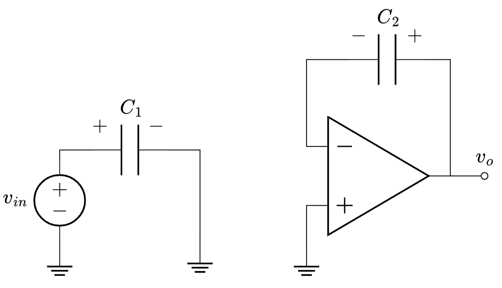
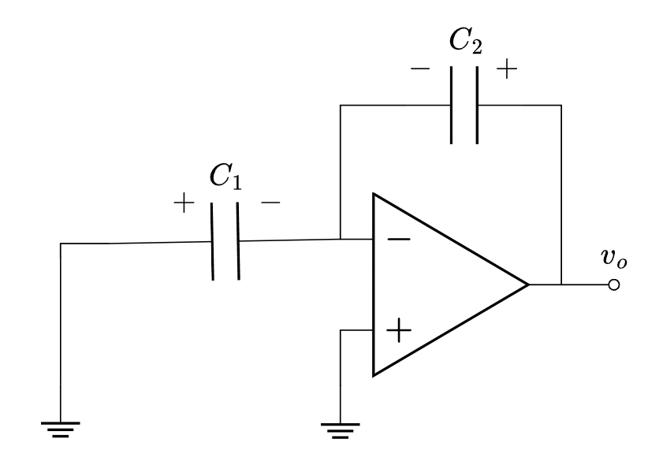

Design of an Analog-Digital-Converter after the ADS1115
Authors
Affiliation
Miko Kranich
Hochschule Bremen
Lars Nickisch
Priyanka Toyni
Aftab Nagarji
Published
2025-01-30
1 VERY IMPORTANT, PLEASE READ
To get the quarto output to behave properly, some steps have to be taken.
When parsing data from .raw files, the toolbox will throw a warning. To prevent this, right click on “l.parse()” -> “Go to definition”. There, you comment out line 197 and the warning is gone.
To justify text I added a custom command in “styles.css”. To use this command and have the text appearance be nicer, use “::: {.justify}” at the beginning of each chapter
Whenever referencing to a figure, some data file, etc. and you compile the whole document (“report_grp4.qmd”) the paths specified have to be relative to the main document, otherwise quarto won’t find the specified file
If you need help with importing .raw files using python, please look at my version in chapters/clock_gen/clock_gen.qmd
2 Introduction
Since more and more manufacturers are ending their production of integrated circuit solutions the development of full custom solutions is becomming more attractive. Thus, the different subgroups of the course “Concept Engineering Mixed-Technology Systems” held by Professor Meiners at Hochschule Bremen are tasked with creating an Analog-Digital-Converter modeled after the ADS1115 by Texas Instruments. In the following we present our approach to designing said ADC. This includes a theoretical analysis of the workings of \(\Sigma \Delta\) ADC’s, simulations of simplified models as well as a detailed step-by-step design using SPICE simulations based on XSchem designs. THIS CAN BE WORDED WAY BETTER.
2.1 General Overview of given ADC
For testing purposes the ADS1115 is connected to an ADXL335 accelerometer and ESP8266 microcontroller. This setup enables us to more precisely characterize the ADC. For further analysis the accelerometer is just considered as an analog input.
As can be seen in the above figure ?@fig-complete_system …
Figure Figure 1 shows a more detailed block diagram of the ADS1115. The focus of our work lies on the components in the orange box. The theory for the digital filter stage following the modulator is also explored. The modulator itself comprises the switched capacitance to sample the input signal, an integrator and the comparator to output a PWM signal. The other blocks depicted are considered auxillary block. These include the multiplexer which can be used to switch between different inputs. It is followed by a programmable gain amplifier. The amplification factor can be selected via an I2C interface which is also used to select the input channel, sample rate, as well as for the read out of the converted digital data among others. Since these auxillary blocks do not add to the functionality of the modulator itself it was decided to not explore them any further. In case of the reference oscillator and the voltage reference, these are modeled as ideal inputs during simulations.
As can be seen in the above figure ?@fig-complete_system …
Figure Figure 1 shows a more detailed block diagram of the ADS1115. The focus of our work lies on the components in the orange box. The theory for the digital filter stage following the modulator is also explored. The modulator itself comprises the switched capacitance to sample the input signal, an integrator and the comparator to output a PWM signal. The other blocks depicted are considered auxillary block. These include the multiplexer which can be used to switch between different inputs. It is followed by a programmable gain amplifier. The amplification factor can be selected via an I2C interface which is also used to select the input channel, sample rate, as well as for the read out of the converted digital data among others. Since these auxillary blocks do not add to the functionality of the modulator itself it was decided to not explore them any further. In case of the reference oscillator and the voltage reference, these are modeled as ideal inputs during simulations.
3.1 System overview of the \(\Delta\)\(\Sigma\) modulator
3.2 Switched Capacitor Integrator
(to be cited: Schreier)
The desired loop filter for the modulator, which is the first and most fundamental building block of our system, will be realised utilizing an active integrator circuit that has a switched capacitance input stage.
A classic implementation of realizing an active integrator would be with the following opamp circuit in figure @opamp_integrator.
Simple opamp based integrator
(explain basic principle of shown integrator circuit)
There is however the inconvinience, that the resistor on the input is generally a lossy and potentially noisy element for our system.
Therefore, it is worth utilizing the following input structure in figure @opamp_sc_integrator, which leads to a switched-capacitor integrator.
Opamp based switched capacitor integrator
The depicted switches are clocked in a way, that no simultanious high levels will occure.
To derive the system behaviour of this circuitry, let’s consider the two phases of operation, given be the switching phases.

Integrator state during phase 1

Integrator state during phase 2
3.2.1 The Operational Transconductance Amplifier (OTA)
For the loopfilter, there is the general need of operational amplifier. This could be done, via the classical OpAmp, for our case however, an operational transconductance amplifier, inn short OTA, will be used. It comes with a few key differentiating aspects, compared to the OpAmp.
(list of OTA features will be added here)
4 Clock-Phase generation
The aforementioned delay in the phases of the clocks acting on the switched capacitor can be achieved by the structure in figure Figure 2. This takes a reference clock signal which provides a signal at the frequency required by the system and outputs four different phases \(\phi_1\), \(\phi_{1d}\), \(\phi_2\) and \(\phi_{2d}\). The feedback between the upper and lower strand of the structure ensures the prevention of overlap between \(\phi_1\) and \(\phi_2\) and in turn for their respective delayed versions.
The aforementioned delay in the phases of the clocks acting on the switched capacitor can be achieved by the structure in figure Figure 2. This takes a reference clock signal which provides a signal at the frequency required by the system and outputs four different phases \(\phi_1\), \(\phi_{1d}\), \(\phi_2\) and \(\phi_{2d}\). The feedback between the upper and lower strand of the structure ensures the prevention of overlap between \(\phi_1\) and \(\phi_2\) and in turn for their respective delayed versions.
Figure 2: Basic structure for delayed clock phase generation
Figure 2: Basic structure for delayed clock phase generation
By changing the capacitance of the marked inverters the actual delay between \(\phi_i\) and \(\phi_{id}\) can be controlled. It is worth noting however, that the capacitive load \(C_L\) experienced at the outputs of the structure also has an influence on the phase delay, as can be seen in figure Figure 3
By changing the capacitance of the marked inverters the actual delay between \(\phi_i\) and \(\phi_{id}\) can be controlled. It is worth noting however, that the capacitive load \(C_L\) experienced at the outputs of the structure also has an influence on the phase delay, as can be seen in figure Figure 3
Code
import numpy as npimport matplotlib.pyplot as pltimport ltspice as lt#parse data from .raw file#for compiling the finished document this path needs to be relative to "report_grp4.qmd"fpath ='../../matlab_python/clk_gen/tb_clkgen.raw'l = lt.Ltspice(fpath)l.parse()#extract relevant datatime = l.get_time()vclk = l.get_data('v(clkin)')vp1 = l.get_data('v(p1)')vp1e = l.get_data('v(p1e)')vp2 = l.get_data('v(p2)')vp2e = l.get_data('v(p2e)')#redefine data arrays considering new lengthfactor =10length =round(len(time)/factor)time = time[:length]vclk = np.flip(vclk[:length])vp1 = np.flip(vp1[:length])vp1e = np.flip(vp1e[:length])vp2 = np.flip(vp2[:length])vp2e = np.flip(vp2e[:length])#plot dataplt.close('all')plt.figure(1)plt.plot(time*1e9, vp1, label=r'$\phi_1$')plt.plot(time*1e9, vp1e, label=r'$\phi_{1d}$')plt.plot(time*1e9, vp2, label=r'$\phi_2$')plt.title('Voltage input clock over time')plt.xlabel('$t$/ns')plt.ylabel('V')plt.legend()plt.grid()
import numpy as npimport matplotlib.pyplot as pltimport ltspice as lt#parse data from .raw file#for compiling the finished document this path needs to be relative to "report_grp4.qmd"fpath ='../../matlab_python/clk_gen/tb_clkgen.raw'l = lt.Ltspice(fpath)l.parse()#extract relevant datatime = l.get_time()vclk = l.get_data('v(clkin)')vp1 = l.get_data('v(p1)')vp1e = l.get_data('v(p1e)')vp2 = l.get_data('v(p2)')vp2e = l.get_data('v(p2e)')#redefine data arrays considering new lengthfactor =10length =round(len(time)/factor)time = time[:length]vclk = np.flip(vclk[:length])vp1 = np.flip(vp1[:length])vp1e = np.flip(vp1e[:length])vp2 = np.flip(vp2[:length])vp2e = np.flip(vp2e[:length])#plot dataplt.close('all')plt.figure(1)plt.plot(time*1e9, vp1, label=r'$\phi_1$')plt.plot(time*1e9, vp1e, label=r'$\phi_{1d}$')plt.plot(time*1e9, vp2, label=r'$\phi_2$')plt.title('Voltage input clock over time')plt.xlabel('$t$/ns')plt.ylabel('V')plt.legend()plt.grid()
[Warning] Variable data type is detected as double precision.
Figure Figure 3 shows the normal delay between \(\phi_1\) and \(\phi_{1d}\) as well as the non-overlap with \(\phi_2\). The structure used for clock generation was modeled after the circuit provided by Boris Murman [@murmann]. In this, they used the sg13g2 standard cells for the NAND gates and inverters which are not built from single transistors and hence their capacitance can not be changed. This however does not affect the circuits ability to generate the needed delays and non-overlaps. Creating the gates from transistors, and in turn the whole structure, does show the same behaviour. TO BE CONFIRMED WITH ACUTAL SC/ADC FOLLOWING. We thus continue to use the version with gate parameters controllable through the transistors. WHY WAS THIS DECISION MADE?
The circuits used for the gates are depicted in figures Figure 4 (a) and Figure 4 (b) for the inverters and NAND gates respectively.
Figure Figure 3 shows the normal delay between \(\phi_1\) and \(\phi_{1d}\) as well as the non-overlap with \(\phi_2\). The structure used for clock generation was modeled after the circuit provided by Boris Murman [@murmann]. In this, they used the sg13g2 standard cells for the NAND gates and inverters which are not built from single transistors and hence their capacitance can not be changed. This however does not affect the circuits ability to generate the needed delays and non-overlaps. Creating the gates from transistors, and in turn the whole structure, does show the same behaviour. TO BE CONFIRMED WITH ACUTAL SC/ADC FOLLOWING. We thus continue to use the version with gate parameters controllable through the transistors. WHY WAS THIS DECISION MADE?
The circuits used for the gates are depicted in figures Figure 4 (a) and Figure 4 (b) for the inverters and NAND gates respectively.
(a) Inverter
(b) NAND Gate
Figure 4: Gates used for clock generating structures
Figure 4: Gates used for clock generating structures
The cascading of two CMOS inverters in figure Figure 4 (a) is needed to create a cleaner output, only using two devices in series will result in poorly defined high and low output levels. REALLY?